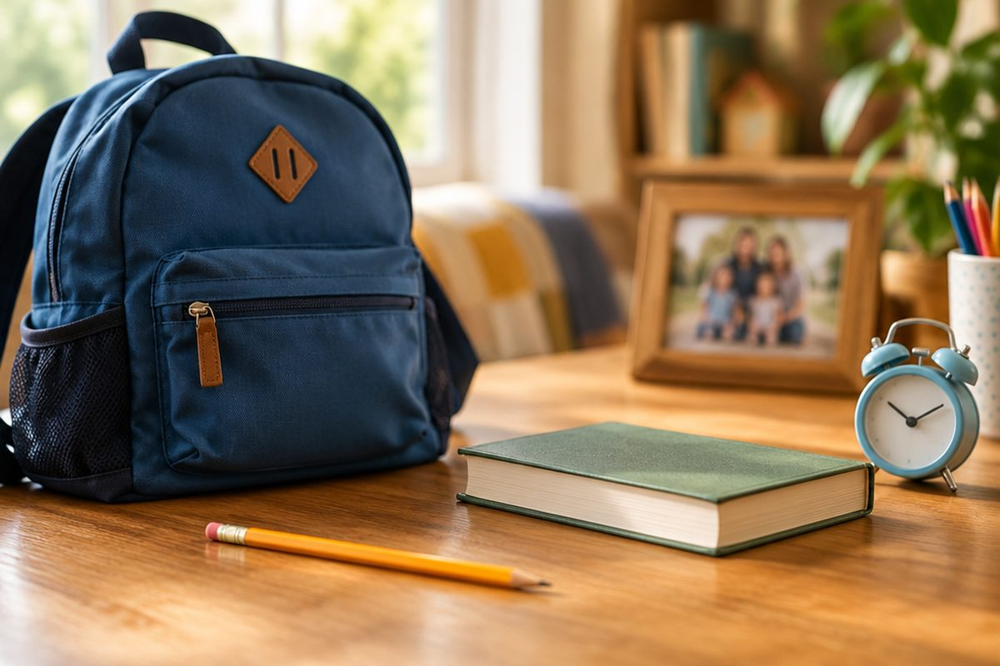

엄마, 아빠, 연필, 가방은 일본어로 뭐라고 할까?

일본 만화에서 'おかあさん(오카-상)!' 하고 엄마를 부르는 소리를 들어 본 적 있나요? 오늘은 가족을 부르는 말과 책상 위 물건 이름을 배우고, '이것은 ~예요'라고 말해 봐요.
우리 가족을 불러요
엄마는 おかあさん(okaasan, 오카-상), 아빠는 おとうさん(otousan, 오토-상)이에요. 가족은 かぞく(kazoku, 카조쿠)라고 해요.
형이나 오빠는 おにいさん(oniisan, 오니-상), 누나나 언니는 おねえさん(oneesan, 오네-상)이에요. 남동생은 おとうと(otouto, 오토-토), 여동생은 いもうと(imouto, 이모-토)예요.
나 자신은 わたし(watashi, 와타시)라고 해요. 남자아이든 여자아이든 쓸 수 있어요.
おかあさん(오카-상) 엄마 / おとうさん(오토-상) 아빠 / おにいさん(오니-상) 형·오빠 / おねえさん(오네-상) 누나·언니
길게 읽느냐에 따라 뜻이 달라져요
할머니는 おばあさん(obaasan, 오바-상), 할아버지는 おじいさん(ojiisan, 오지-상)이에요. ば와 じ를 길게 늘여 읽어요.
그런데 길게 읽지 않으면 뜻이 바뀌어요! おばさん(오바상)은 '아주머니·이모·고모', おじさん(오지상)은 '아저씨·삼촌'이에요.
그래서 긴소리를 만드는 あ, い 같은 글자를 빠뜨리지 않고 쓰고, 길게 소리 내는 것이 중요해요.
おばあさん(오바-상) 할머니 ↔ おばさん(오바상) 아주머니 / おじいさん(오지-상) 할아버지 ↔ おじさん(오지상) 아저씨
책상 위 물건 이름
책은 ほん(hon, 홍), 연필은 えんぴつ(enpitsu, 엠피츠), 가방은 かばん(kaban, 카방)이에요.
책상은 つくえ(tsukue, 츠쿠에), 의자는 いす(isu, 이스), 우산은 かさ(kasa, 카사), 시계는 とけい(tokei, 토케-)예요.
とけい의 けい는 '케이'보다 '케-'처럼 길게 들려요.
ほん(홍) 책 / えんぴつ(엠피츠) 연필 / かばん(카방) 가방 / ⏰ とけい(토케-) 시계
'이것은 ~예요' 말하기
물건을 가리키며 'これは ~です(코레와 ~데스)'라고 하면 '이것은 ~예요'라는 뜻이 돼요. 여기서도 は는 '와'로 읽어요. ん 뒤에 で가 오면 ん이 'ㄴ'처럼 들려서 ほんです는 '혼데스', かばんです는 '카반데스'로 읽어요.
'나의 ~'라고 할 때는 の(노)를 써요. わたしの かばん(와타시노 카방)은 '나의 가방', 곧 '내 가방'이에요.
これは ほんです。(코레와 혼데스) 이것은 책이에요. / これは わたしの かばんです。(코레와 와타시노 카반데스) 이것은 내 가방이에요.
핵심 낱말
- かぞく
- 가족. 카조쿠라고 읽어요.
- 긴소리
- 앞 소리를 길게 늘여 읽는 소리. おばあさん의 ばあ는 '바-'로 길게 읽어요.
- これは ~です
- '이것은 ~예요'라는 문장. は는 '와'로 읽어요.
- の
- '~의'라는 뜻. わたしの는 '나의'예요.
꼭 알아야 할 표현
| かぞく | 가족 👨👩👧👦 | kazoku (카조쿠) |
| おかあさん | 엄마, 어머니 👩 | okaasan (오카-상) |
| おとうさん | 아빠, 아버지 👨 | otousan (오토-상) |
| おにいさん | 형, 오빠 👦 | oniisan (오니-상) |
| おねえさん | 누나, 언니 👧 | oneesan (오네-상) |
| おばあさん | 할머니 👵 | obaasan (오바-상) |
| おじいさん | 할아버지 👴 | ojiisan (오지-상) |
| わたし | 나, 저 | watashi (와타시) |
| えんぴつ | 연필 ✏️ | enpitsu (엠피츠) |
| かばん | 가방 🎒 | kaban (카방) |
| とけい | 시계 ⏰ | tokei (토케-) |
| これは ほんです | 이것은 책이에요. | kore wa hon desu (코레와 혼데스) |
한 줄 정리
- 엄마 おかあさん, 아빠 おとうさん, 형·오빠 おにいさん, 누나·언니 おねえさん이에요.
- おばあさん(할머니)과 おばさん(아주머니)처럼 길게 읽느냐에 따라 뜻이 달라져요.
- これは ~です(코레와 ~데스)로 '이것은 ~예요'라고 말할 수 있어요.
학교 교육과정 연결 (가정 학습 과정)
초등학교 정규 교육과정에는 일본어가 없어요. 처음 배우는 아이를 위한 가정 학습용 입문 단원이에요.